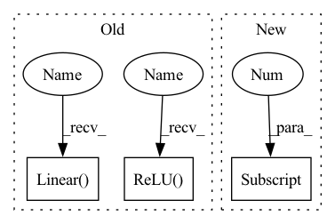

Pattern ID :38388
Before Change
stride=self.custom_config["model_arch_args"]["stride_layer_{}".format(i)],
padding=self.custom_config["model_arch_args"]["padding_layer_{}".format(i)],
)
relu_f = nn.ReLU()
pool_f = nn.MaxPool2d(kernel_size=self.custom_config["model_arch_args"]["pool_size_layer_{}".format(i)])
layers.append(conv_f)
layers.append(relu_f)
layers.append(pool_f)
input_dim = self.custom_config["model_arch_args"]["out_channel_layer_{}".format(i)]
else:
raise ValueError()
self.encoder = nn.Sequential(
*layers
)
self.hidden_state_size = self.custom_config["model_arch_args"]["hidden_state_size"]
self.rnn = nn.GRUCell(input_dim, self.hidden_state_size)
self.q_value = nn.Linear( self.hidden_state_size, num_outputs)
// record the custom config
if self.custom_config["global_state_flag"]:
state_dim = self.custom_config["space_obs"]["state"].shapeAfter Change
encoder_layer_dim.append(out_dim)
self.encoder_layer_dim = encoder_layer_dim
self.obs_size = self.full_obs_space.shape[0]
input_dim = self.obs_size
for out_dim in self.encoder_layer_dim:
layers.append(
SlimFC(in_size=input_dim,In pattern: SUPERPATTERN
Frequency: 3
Non-data size: 3
Instances Fragment ID: 109701259
Project Name: replicable-marl/marllib
Commit Name: 2d4a24632db3e3a2b79e668e480b40ec8052cf2a
Time: 2023-02-25
Author: hhhusiyi@163.com
File Name: marllib/marl/models/zoo/rnn/jointQ_rnn.py
M Class Name: JointQ_RNN
N Class Name: JointQ_RNN
M Method Name: __init__(6)
N Method Name: __init__(6)
M Parent Class: nn.Module,TorchModelV2
N Parent Class: nn.Module,TorchModelV2
M File Name: marllib/marl/models/zoo/rnn/jointQ_rnn.py
N File Name: marllib/marl/models/zoo/rnn/jointQ_rnn.py
M Start Line: 28
M End Line: 81
N Start Line: 20
N End Line: 85
Before Change
stride=self.custom_config["model_arch_args"]["stride_layer_{}".format(i)],
padding=self.custom_config["model_arch_args"]["padding_layer_{}".format(i)],
)
relu_f = nn.ReLU()
pool_f = nn.MaxPool2d(kernel_size=self.custom_config["model_arch_args"]["pool_size_layer_{}".format(i)])
layers.append(conv_f)
layers.append(relu_f)
layers.append(pool_f)
input_dim = self.custom_config["model_arch_args"]["out_channel_layer_{}".format(i)]
else:
raise ValueError()
self.encoder = nn.Sequential(
*layers
)
self.hidden_state_size = self.custom_config["model_arch_args"]["hidden_state_size"]
self.mlp = nn.Linear(input_dim, self.hidden_state_size)
self.q_value = nn.Linear( self.hidden_state_size, num_outputs)
self.n_agents = self.custom_config["num_agents"]
// record the custom config
self.custom_config = self.custom_configAfter Change
encoder_layer_dim.append(out_dim)
self.encoder_layer_dim = encoder_layer_dim
self.obs_size = self.full_obs_space.shape[0]
input_dim = self.obs_size
for out_dim in self.encoder_layer_dim:
layers.append(
SlimFC(in_size=input_dim, Fragment ID: 109701267
Project Name: replicable-marl/marllib
Commit Name: 2d4a24632db3e3a2b79e668e480b40ec8052cf2a
Time: 2023-02-25
Author: hhhusiyi@163.com
File Name: marllib/marl/models/zoo/mlp/jointQ_mlp.py
M Class Name: JointQ_MLP
N Class Name: JointQ_MLP
M Method Name: __init__(6)
N Method Name: __init__(6)
M Parent Class: nn.Module,TorchModelV2
N Parent Class: nn.Module,TorchModelV2
M File Name: marllib/marl/models/zoo/mlp/jointQ_mlp.py
N File Name: marllib/marl/models/zoo/mlp/jointQ_mlp.py
M Start Line: 18
M End Line: 84
N Start Line: 20
N End Line: 84
Before Change
if l_id == len(layer_sizes) - 1:
if norm_output:
layers.append(nn.Sequential(
nn.Linear( input_size, int(current_size * current_size * current_channels)) ,
nn.Sigmoid()
))
else:
layers.append(nn.Sequential(
nn.Linear(input_size, int(current_size * current_size * current_channels)),
))
else:
layers.append(nn.Sequential(
nn.ReLU() , // input shape (1, current_size, current_size)
nn.ConvTranspose2d(
in_channels=layer_sizes[l_id], // input height
out_channels=current_channels,After Change
layers = []
current_channels = 1
current_size = feature_size[0]
//Loop backward through decoding layers in order to work out the dimensions at each layer - in particular the first
// linear layer needs to know B*current_size*current_size*channels
for l_id in range(len(channels)):
if l_id == len(channels) - 1: Fragment ID: 109701271
Project Name: jameschapman19/cca_zoo
Commit Name: f1ccf7409a79dfe95a0da520add60e02cad61c3f
Time: 2021-01-20
Author: james.chapman.19@ucl.ac.uk
File Name: cca_zoo/deep_models.py
M Class Name: CNNDecoder
N Class Name: CNNDecoder
M Method Name: __init__(8)
N Method Name: __init__(8)
M Parent Class: BaseDecoder
N Parent Class: BaseDecoder
M File Name: cca_zoo/deep_models.py
N File Name: cca_zoo/deep_models.py
M Start Line: 159
M End Line: 199
N Start Line: 167
N End Line: 204